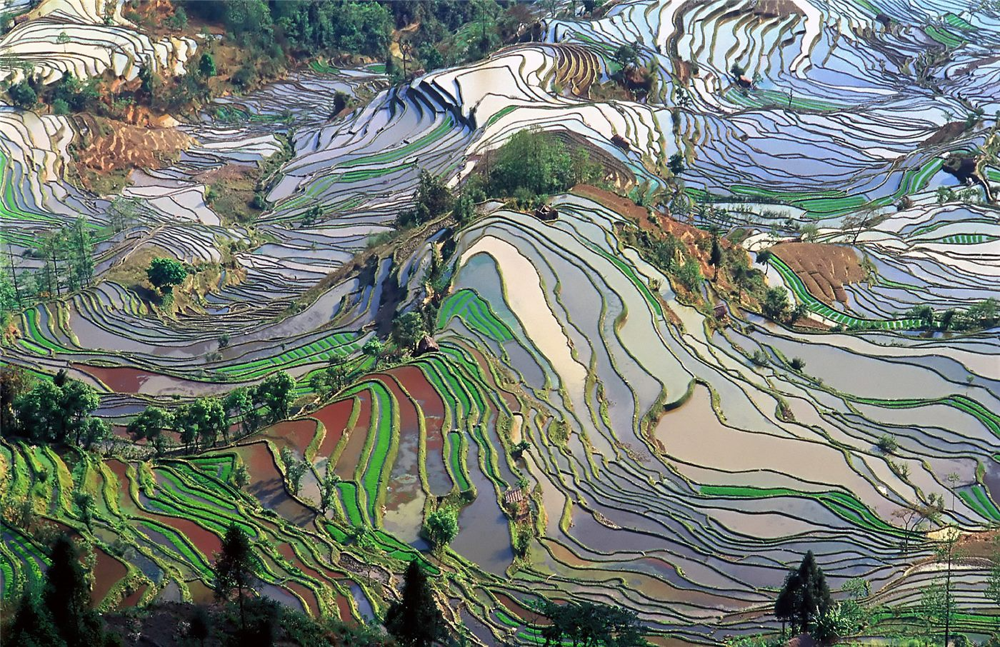

추분에 맞춘 제9회 「중국 농민 풍수절」… 주무대는 후베이 짜오양
추분인 23일 중국 전역에서 제9회 「중국 농민 풍수절」 행사가 열렸다. 올해 주무대는 후베이성 샹양시 짜오양이며, 주제는 「풍년으로 새 국면을 열고, 실천으로 진흥을 이끈다」이다.
전금문 기자 · 2026.09.26
橋중국

중국은 23일 추분을 맞아 제9회 「중국 농민 풍수절」(풍년절) 행사를 전국에서 열었다. 풍수절은 2018년부터 매년 추분에 열리는, 국가 차원에서 농민을 위해 처음 만든 명절이다.
광고 문의 · 300×250올해 전국 주무대 행사는 후베이성 샹양시 짜오양의 한 농촌 마을에서 열렸다. 주제는 「풍년으로 새 국면을 열고, 실천으로 농촌 진흥을 이끈다」로 정해졌다. 전국 무료 의료 봉사, 농업·농촌 과학 보급의 달, 「황금 가을 소비 시즌」 등 46개 중점 행사가 함께 진행된다.
왜 추분인가
추분은 낮과 밤의 길이가 같아지는 절기로, 전국이 가을걷이와 가을갈이, 가을 파종을 하는 시기다. 남쪽은 벼를, 북쪽은 콩을 거두고 각지의 과일이 수확되는 때여서 넓은 국토의 서로 다른 수확 리듬을 한 날에 묶기 좋다는 설명이다. 예로부터 땅에 제사를 지내던 전통과도 맞닿아 있다.
베이징에서는 차오양구 진잔향의 한 농장에서 시 주무대 행사가 열렸다. 제37회 베이징 농민예술제 공연과 농산물 장터가 함께 마련됐다.
농촌과 도시를 잇는 소비
풍수절은 농산물 판매와 농촌 관광을 도시 소비와 연결하는 계기로도 활용된다. 올해는 추석·중추절, 국경절 연휴와 이어지는 시기여서 지역 특산물 판매와 농촌 체험 관광 수요가 함께 늘 것으로 기대된다.
출처·참고 (사실 확인용 — 본문은 직접 재작성)
· 신화통신·중국망 보도
· 중국 농업농촌부 발표
· 신화통신·중국망 보도
· 중국 농업농촌부 발표